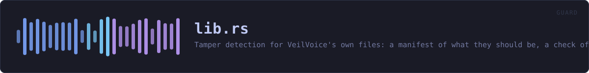

crates/veilvoice-guard/src/lib.rs
veilvoice-guard · 140 lines · read the source
Tamper detection for VeilVoice's own files: a manifest of what they should be, a check of what they are, and a best-effort answer to "what changed them".
What this is, and the word it deliberately does not use
It is not tamper-proof. Nothing that runs as an ordinary program on your computer can be. A guard running as you can be killed by anything else running as you; a guard running as root can be stopped by root. The only honest verb here is detect, and where detection can be defeated that is said rather than glossed.
This is the same limit the app lock has, for the same reason, and the project answers it the same way: state it plainly, in the place the user reads. See [SCOPE].
What it actually does
- [
Manifest::of] records each file's size and SHA-256. - [
Manifest::check] compares that against what is on disk now and reports what was modified, removed or added. - [
blame] tries to name the process responsible for a change. It usually cannot, and says so instead of guessing.
The manifest is only as trustworthy as where it is kept
Written plainly, a manifest detects accidental corruption, an interrupted update, a file swapped by something careless -- and an attacker who did not think to rewrite it. It does not detect one who did, because they can recompute it as easily as this crate can.
To raise that bar, seal the manifest with [veilvoice_crypto::container::seal_with_password] and keep the passphrase out of the manifest's own directory. Then rewriting it undetectably requires the passphrase as well as write access. That is a real improvement and still not proof: an attacker who is present while you type the passphrase has everything. [Manifest::seal] and [Manifest::open_sealed] do this.
What a privileged helper would add, and why there is not one here
A root service using fanotify (Linux) or a SACL plus Security event 4663 (Windows) could attribute every write reliably, and fanotify with FAN_OPEN_PERM could even block one. That is genuinely stronger than anything in this crate.
It is also an installer, a privileged daemon and a much larger attack surface bolted onto a project that currently needs no privileges at all -- and it still could not stop a root-level attacker, only watch one. So the unprivileged half ships first, on its own merits, and ROADMAP.md records what the privileged half would need to be worth adding.
WHAT CALLS WHAT
The functions this file defines, and the calls between them. An edge means the callee's name appears, called, inside the caller's body — a syntactic reading, not a type-resolved one.
The same graph as Mermaid source
%%{init: {"theme":"base","themeVariables":{"background":"#1a1b26","primaryColor":"#1f2335","primaryTextColor":"#c0caf5","primaryBorderColor":"#7aa2f7","secondaryColor":"#16161e","tertiaryColor":"#16161e","lineColor":"#737aa2","textColor":"#c0caf5","mainBkg":"#1f2335","nodeBorder":"#7aa2f7","clusterBkg":"#16161e","clusterBorder":"#2f3549","fontFamily":"ui-monospace, SFMono-Regular, Consolas, monospace","fontSize":"14px"}}}%%
flowchart TD
n_from["Error::from"]
n_from["Error::from"]
n_fmt["Error::fmt"]
n_source["Error::source"]This site loads no third-party script, so it cannot run Mermaid; the diagram above is the same nodes and edges drawn by the generator instead. GitHub renders the source below directly.
ITEMS
| Item | Line | Documentation |
|---|---|---|
VERSION pub const | 64 | Crate version string, surfaced in the About panel. |
SCOPE pub const | 70 | What tamper detection is worth, in the words a front-end should show. |
Error pub enum | 80 | Everything that can go wrong in this crate. |
Error::from fn | 90 | |
Error::from fn | 96 | |
Error::fmt fn | 102 | |
Error::source fn | 112 |